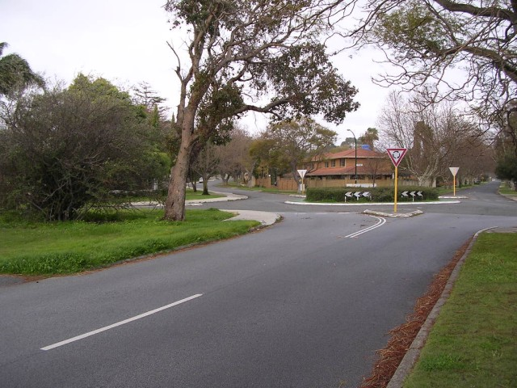
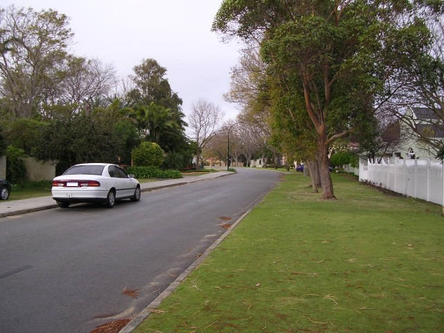
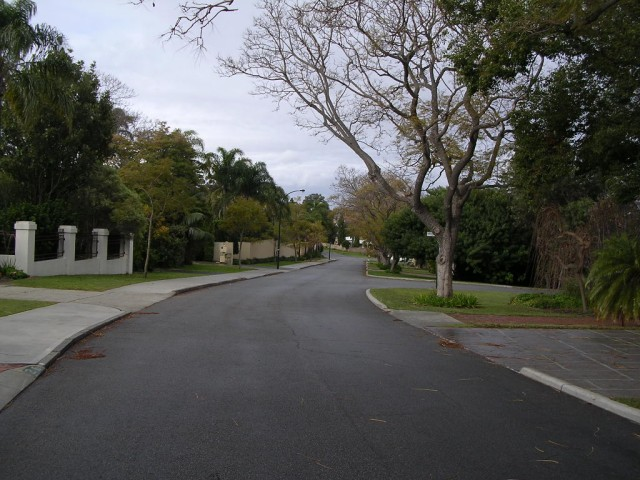
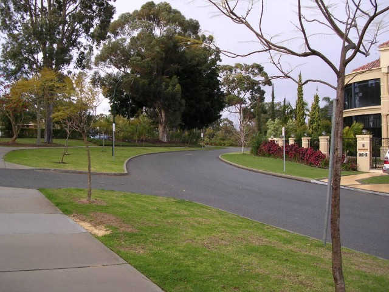
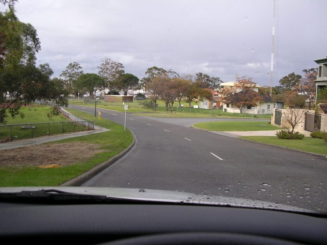
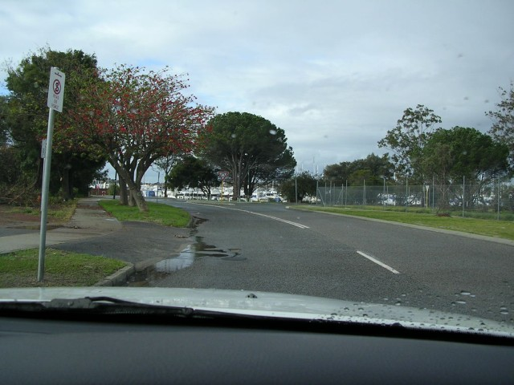
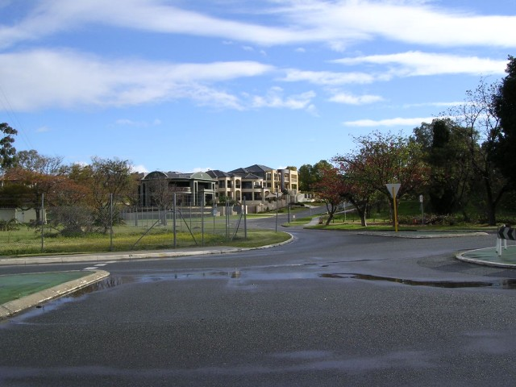
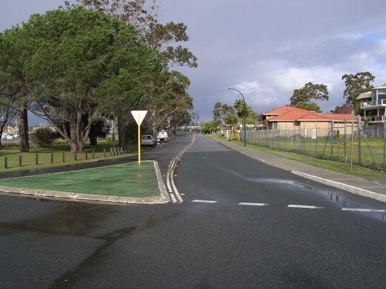

Numbers on the map represent the location where the photographs were taken. Scroll down to view the photographs.
Applecross - Duncraig Road
|| Contents || Kintail - Tweeddale | Duncraig | Canning Beach - Ogilvie || Home ||
Numbers on the map represent the location where the photographs were taken. Scroll
down to view the photographs.
Return to racingcircuits.net's Photo Archive Main Index

9 - Veer left into Duncraig Road.

10 - Duncraig Road.

11 - Duncraig Road.

12 - Duncraig Road.

13 - Duncraig Road.

14 - Duncraig Road.

15 - Looking back up Duncraig Road from Canning Beach Road.

16 - 90° to left of last photo.
Photographs and Text ©Neil Fackerell. Reproduced here with kind permission.